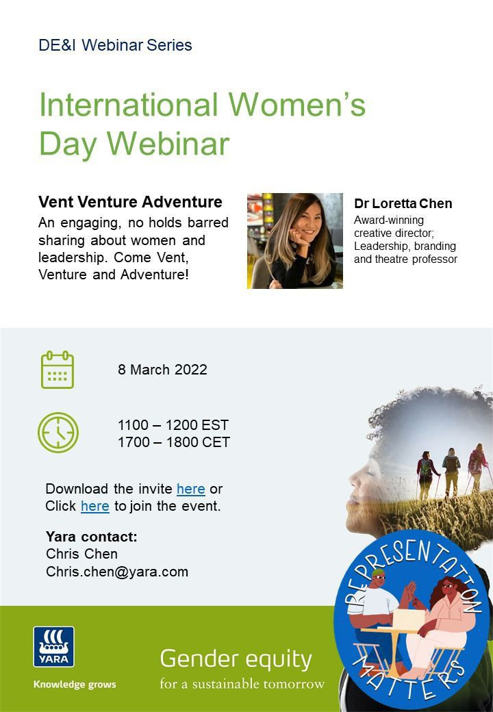
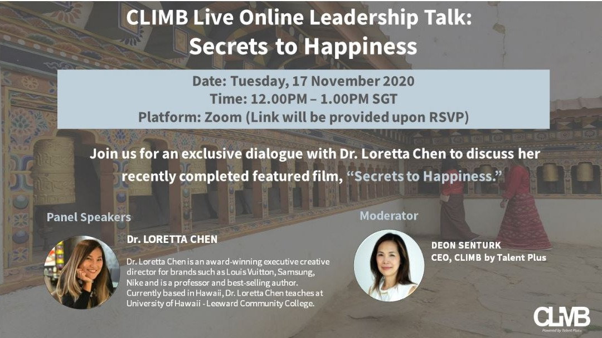

Vent. Venture.
Adventure.
Authentic connection. Big ideas. Candid conversations.
Loretta brings together three decades across entrepreneurship, education, technology, culture and the arts. Her talks combine lived experience with global case studies designed to provoke better questions, challenge comfortable assumptions and leave audiences with ideas they can actually use.
From 25-minute keynotes to executive workshops, on stage or online.
Trust before transaction
Why culture and trust trumps strategy.
What comes next
Beyond the hype: building technology around humanity.
Build what’s next
What founders and organizations can learn from experimentation, reinvention and intelligent iterations.
Leadership across cultures
Lessons from women, communities and leaders whose stories rarely make the conventional leadership canon.
Selected engagements
From the wall


Your stage, her voice.
Book a keynote ↗